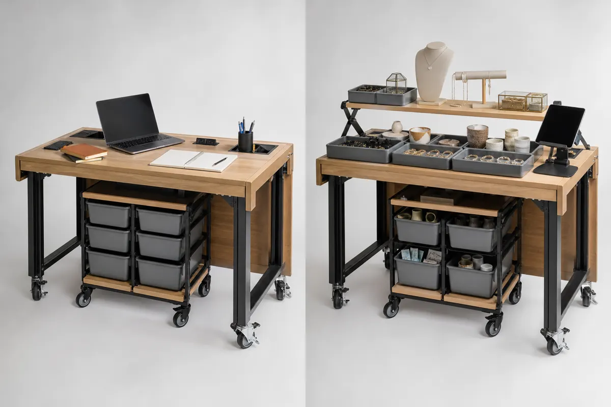
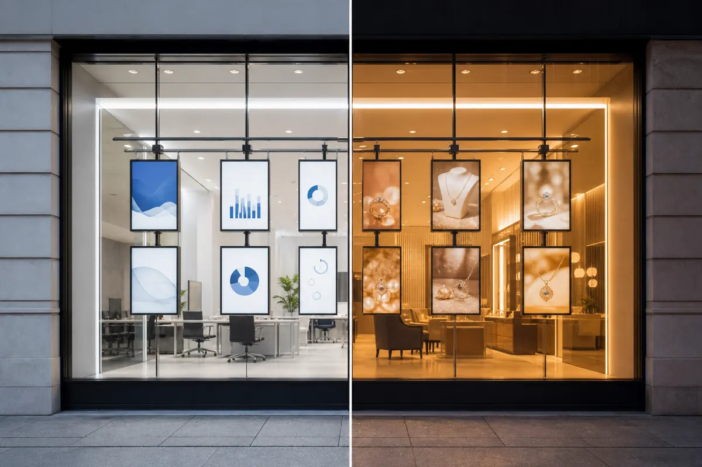
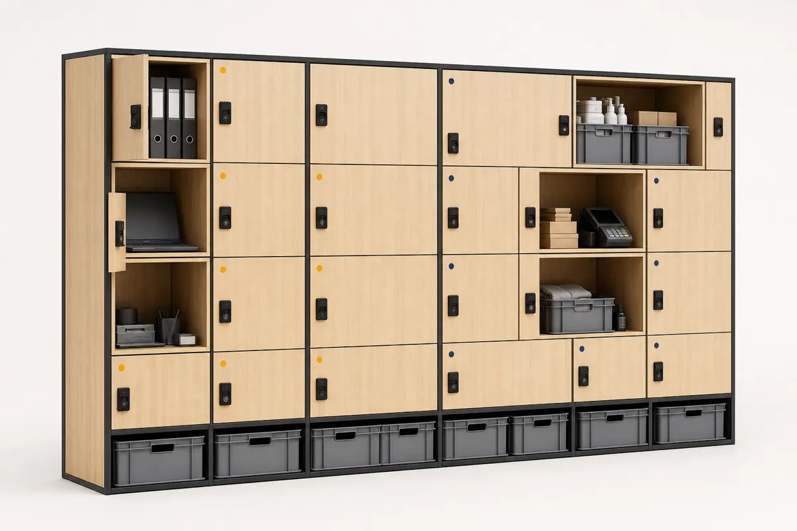
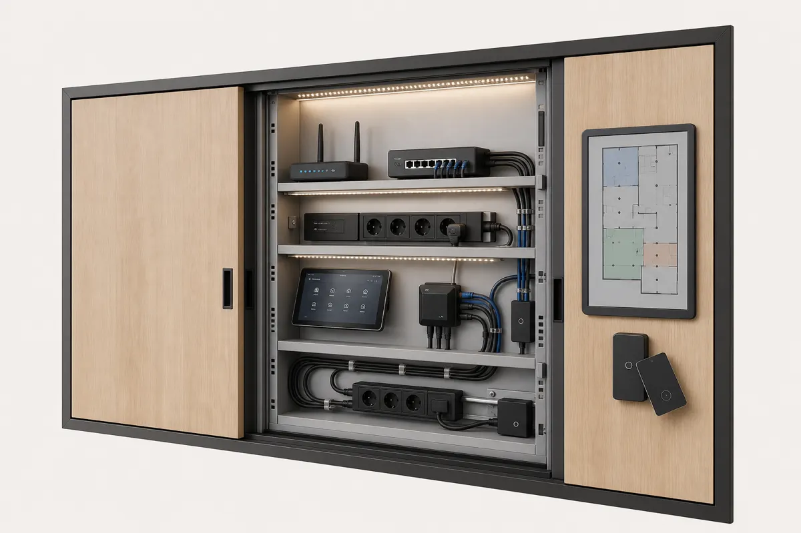

Le même local opère deux concepts différents dans la même journée. Voici la timeline, les zones, les équipements et la checklist de switch. Ce qui change entre les deux : l'éclairage, les écrans, le mobilier escamotable et les casiers.

Badge opérateur A. Wi-Fi A, éclairage neutre 4000 K, tables en config bureau, écrans d'accueil sobres. Fournitures dans casiers A.
Checklist sortie A. Étals escamotés en mode présentoir. Éclairage basculé en ambiance chaude. Devanture numérique sur identité B.
Badge opérateur B. Caisse mobile B, Wi-Fi B, spots ambrés, bacs produits sortis des casiers. Station de caisse en place.
Même enveloppe physique. Ce qui change : la devanture numérique, l'éclairage (kit DA), les étals (escamotables) et les casiers (mur opérateurs).

| Zone | Statut | Équipement | Responsable |
|---|---|---|---|
| Station de caisse | Dédié par opérateur | Station caisse mobile A / B (tablette + TPE) | Opérateur |
| Étals escamotables | Mutualisé · reconfiguré | Tables modulaires bureau ↔ présentoir | Exploitant coordinateur |
| Mur de casiers | Dédié par opérateur | Casiers A / B, serrures connectées, bacs normés | Opérateur |
| Armoire Switch (IT) | Dédié par opérateur | Wi-Fi A / B isolés, VLAN, routeur, badges NFC | Exploitant coordinateur |
| Devanture numérique | Dédié par créneau | Bandeau LED + écran vitrine programmable | Opérateur entrant |
| Kit DA & éclairage | Mutualisé · paramétrable | Spots orientables + bandeaux LED + panneau mural | Exploitant coordinateur |
| Nettoyage / déchets | Mutualisé · facturé | Kit standard + passage prestataire 1×/jour | Prestataire externe |

Cliquez sur les items pour voir avancer la barre de progression. Sur le terrain, ces étapes sont guidées par l'app Switch sur tablette.

Chaque incident est signalé pendant le switch, photo à l'appui, et imputé selon des règles connues à l'avance.
| Date | Opérateur | Type | Description | Statut | Imputation |
|---|---|---|---|---|---|
| 14/05/2026 17:18 | Espace de travail | Mobilier | Étal escamotable bloqué en position bureau — goupille tordue. | Clos | Pièce remplacée, forfait maintenance |
| 09/05/2026 18:22 | Boutique créateur | IT | Station caisse B non détectée par le routeur au switch. | Résolu — délai 12 min | Sans suite (câble réseau rebranché) |
| 02/05/2026 17:42 | Espace de travail | Nettoyage | Plan de travail non nettoyé en fin de service. | À régler | Pénalité 25 € — opérateur A |
Tout ce qui apparaît dans cette démo est livrable. Composez en quelques clics le kit Switch adapté à votre local.